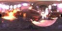
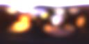
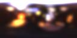

HDR
Shopでは、ハイ・ダイナミック・レンジ(HDR)の360度パノラマ画像（つまり、light probe）上で、 “diffuse convolution”や”specular
convolution”を行うことができます。この機能は、 “diffuse”テキスチャ・マップや、 “rough specular”テキスチャ・マップの事前処理を行いたいときに有用です。例としては、リアルタイム・アプリケーションでlight
probeを用いてオブジェクトに光を当てたいときが挙げられます。また、このときのlight probeのフォーマットは、 “latitude/longitude（緯度/経度）”でなければいけません。パノラマ・フォーマットの変換方法に関しては、チュートリアル「パノラマ画像の変換
(Panoramic Image Conversion)」を参照してください。各ピクセルは、入射照明に相当する半球での、コサインによる加重積分値に置き換えられます。非数学的用語でいえば、
“Diffuse Convolution”は、拡散反射オブジェクトに照明をあてるための環境マップです（法線ベクトル方向でサンプリングされる）。light
probe によって照らされていることをしめすために使うと良いでしょう。
“Specular convolution”は、大まかであっても、光沢感のあるオブジェクトに照明をあてるための環境マップです（反射ベクトル方向でサンプリングされる）。Convolutionの計算にはかなりの時間がかかるため、はじめに画像をダウンサンプリング（訳注：画像解像度の縮小）をしたほうが良いでしょう。詳細は、 “reflection mapping”をご覧ください。
http://www.debevec.org/ReflectionMapping/
1. HDR Shopに、latitude/longitudeフォーマットのlight probeをロードしてください。sample
light probeを使って始めてみることもできます。
2. 画像サイズを変更します。メニューバーから、 “Image”をクリックして、 “Size”から“Half
Size”を選んでください。HDR Shopがconvolution計算を適切な時間で行える時点まで、これを何度か繰り返してください。この例では、画像は128x64までサイズ変更を行い、convolution計算には約96秒を要しています。
3. diffuse convolutionは、選択されているウィンドウ上で行われるので、light
probe画像をクリックして、それが選択されていることを確認してください。
4. メニューバーの“Image” をクリックして、 “Panorama”から“Diffuse/Specular
Convolution”を選んでください（訳注：原文では、 “Image”から “Diffuse Blur”を選ぶとなっていますが、このメニューは用意されていません）。
5. 純粋なdiffuse convolutionを行う場合は、 “Phong Exponent”値はデフォルト(1.000)を利用してください。Convolutionをrough
specularに適応させるには、“Phong Exponent”の値を高めにしてください。Phong Exponent”値が高い場合、下記に示したように、明るいピクセルの周囲には、よりはっきりとしたローブが生じます。
6. HDR Shopがdiffuse convolutionのプロセスに10秒以上かかる際は、警告メッセージが表示されます。
7. ステップ２に戻り、
“Half Size”オプションの代わりに“Arbitrary Resize”オプションを用いて、元のlatitude/longitude画像にサイズを変更することも可能です。
|
画像: |
オリジナル |
Diffuse
Convolution |
Specular Convolution |
|
|
Phong
Exponent: |
|
1.0 |
50.0 |
100.0 |
|
|
<> |
|
 |
 |